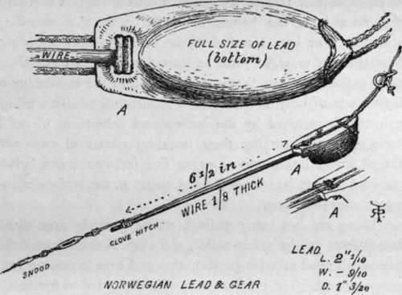

Sea Fishing From Yachts And Large Fishing Boats. Part 4
Description
This section is from the book "Sea Fishing", by John Bickerdyke. Also available from Amazon: Sea Fishing.
Sea Fishing From Yachts And Large Fishing Boats. Part 4
On p. 261 I have given an engraving of two hooks, one for use in places where the mackerel are small, the other for large mackerel. On the question of baits I must refer the reader to page 107, and merely say here that quite the best is a triangular piece of skin cut close to the tail of a mackerel. It is not well to sail too fast when mackerel fishing ; about three knots an hour is quite fast enough, and sail must be reduced if necessary.
In reeling, railing, or whiffing 1 for pollack—to turn to another subject—considerable judgment is required. With regard to the lead, the lighter it is the better, certainly, provided that by letting out plenty of line the bait can be brought near the bottom. But in the evening time, when the fish come to the surface, a lead of a few ounces will answer very well. For both pollack and bass fishing from a sailing boat I have been using lately a lead brought me by a friend from Norway. I have also found it a good piece of gear for mackerel fishing. It is sufficiently explained by the illustration. It tows very steadily, and probably would not frighten the fish so much as some other forms of lead. It inclines to the shape of a somewhat dumpy sea-boat.
The snood for pollack or bass must, of course, be very much stronger than that used for mackerel. It must be something which will not only hold a fish of 25 lbs., but that will stand the sudden jerk when the fish seizes the bait. It is never safe when pollack or bass fishing to make fast the line ; for even if a large fish does not break the snood, the hook tears out. As tending to moderate some of the suddenness of the pull, the use of really good horsehair or two-strand cotton lines is recommended ; for they possess so much elasticity that the fish is played on them almost as if it were on a rod.
1 These terms are used indiscriminately by fishermen, and there are other local words meaning much the same thing. I have seen it asserted, however, that whiffing is more properly applied to trailing a line after a boat which is being rowed, while reeling or railing is the same process carried on from a yacht or other sailing vessel. —J. B.
In the chapter on Ocean Fishing a clever gear is described, which enables fish of one or even two hundredweight to be hooked and held while the vessel continues her course. There seems no reason why similar gear, on a much smaller scale, should not be used for pollack and bass fishing from yachts. Another method of meeting the first pull of a fish on an otherwise more or less rigid line is to take a piece of round, solid indiarubber about eighteen inches in length and join the two ends of it to two points in the line 3 ft. 6 in. apart. When a fish seizes the bait the rubber stretches to the extent allowed by the line, and no more.
It is difficult to lay down any exact rules as to the length and consistence of the snooding. The bigger the lead, the longer the snooding should be, but in no case less than six yards ; for the lead, which is large and conspicuous, must on no account be near the bait. Next the bait should be a yard and a half of the strongest salmon gut, either single, double, or treble, according to the size of the fish which are likely to be caught. There are some places where the largest probable pollack is not more than 5 lbs. ; others, again, where fish of 10 lbs. or 12 lbs. are likely to be met with in the course of any day's fishing.
Between the gut and the lead either the ordinary hemp snooding may be used, or one of the Manchester snoods, or an eight-plait tanned silk, flax, or cotton line. Of course, the finer it is the better, consistent with the necessary strength. For bass I would advise a still longer snooding, four fathoms or eight yards at least, for these fish are shyer than pollack. When they are feeding near the surface, quite light leads of only an ounce or two will suffice. This is not generally recognised by the professional fishermen, whom I have often seen sinking their lines by means of two- and three- pound leads, quite four or five fathoms down, when the bass were to be seen splashing about on the surface of the water after sand-eels.
There are not many pollack railing grounds over which large yachts can be safely sailed, and even in small vessels the helmsman must exercise great caution and care to prevent running aground. The tidal races in which bass are so frequently found are particularly nasty places for yachts. A responsible man should be at the helm not only by reason of the danger, but also because sport depends very much on the way the yacht is handled. As a general rule, few large pollack will be caught unless the line can be kept over submerged rocks. When bass are about and feeding just below the surface, very great skill is required to place the baits among the fish without letting the yacht pass through the shoals. In fact, harling (see p. 263) under sail should be attempted.
I had a day's bass fishing, which might have been a record one, altogether spoilt by the clumsy and thoughtless behaviour of some people in a small cutter, who worked about all over the ground, sailing the yacht right through the shoals, and frightening every fish to the bottom. They would have done much better to have anchored and fished with drift lines in the manner described in the previous chapter.
This is all, I think, that need be said here concerning whiffing, and fishing near the bottom, it being understood that this chapter should be read in connection with the detailed information given in other chapters in the book, particularly the previous one and that on Baits.
In the interest of the larder rather than of sport, a few remarks may find place here on trots, long lines, bulters, or spillers, which are practically synonymous terms, and the three kinds of nets which are most used by yachtsmen.
Continue to:
- prev: Sea Fishing From Yachts And Large Fishing Boats. Part 3
- Table of Contents
- next: Sea Fishing From Yachts And Large Fishing Boats. Part 5
Tags
fishing, hooks, bait, fishermen, spanish mackerel, mackerel fishing